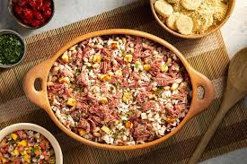
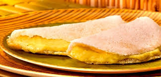

Baião de Dois
Ingredientes
- 250 g de feijão verde ou feijão de corda
- 200 g de arroz
- 150 g de queijo coalho em cubos
- 100 g de carne seca dessalgada e desfiada
- 1 cebola média picada
- 2 dentes de alho picados
- 2 colheres (sopa) de manteiga de garrafa
- Cheiro-verde a gosto
- Sal e pimenta-do-reino
Modo de Preparo
- Cozinhe o feijão até ficar macio, mas sem desmanchar.
- Em outra panela, refogue cebola e alho na manteiga de garrafa.
- Junte carne seca, deixe dourar, acrescente arroz e o feijão com um pouco de água.
- Cozinhe em fogo médio até o arroz absorver o líquido.
- Finalize com queijo coalho, cheiro-verde, ajuste o sal e a pimenta.

Carne de Sol com Macaxeira
Ingredientes
- 500 g de carne de sol dessalgada em tiras
- 1 kg de macaxeira (aipim) descascada e cortada em pedaços
- 2 colheres (sopa) de manteiga de garrafa
- 1 cebola média em rodelas
- 2 dentes de alho amassados
- Cebolinha picada para finalizar
Modo de Preparo
- Cozinhe a macaxeira em água fervente até ficar macia.
- Retire a água e amasse em um purê grosso, reserve.
- Em uma frigideira grande, esquente a manteiga de garrafa e doure a carne de sol.
- Acrescente cebola e alho, refogue até ficarem translucentes.
- Sirva a carne sobre o purê de macaxeira e polvilhe cebolinha.

Acarajé
Ingredientes
- 500 g de feijão-fradinho
- 1 cebola média
- Sal a gosto
- Azeite de dendê para fritar
- Recheio: vatapá, caruru, camarão seco, pimenta e salada
Modo de Preparo
- Deixe o feijão de molho e depois retire as cascas, batendo os grãos no processador com a cebola e sal.
- Modele bolinhos e frite em azeite de dendê bem quente até dourar.
- Abra o bolinho ao meio e coloque vatapá, caruru e camarão a gosto.

Tapioca
Ingredientes
- 2 xícaras de goma de mandioca hidratada
- Sal a gosto
- Recheios: queijo coalho, coco ralado com açúcar, goiabada, entre outros
Modo de Preparo
- Peneire a goma e misture uma pitada de sal.
- Aqueça uma frigideira antiaderente e espalhe uma fina camada de goma até formar uma “panqueca”.
- Quando desgrudar, vire, aqueça o outro lado e recheie a gosto.
Bolo de Milho
Ingredientes
- 2 latas de milho verde escorridas
- 1 lata de leite condensado
- 1 lata de leite (use a mesma medida do leite condensado)
- 3 ovos
- 3 colheres (sopa) de manteiga
- 1 xícara de fubá
- 1 colher (sopa) de fermento em pó
Modo de Preparo
- No liquidificador, bata todos os ingredientes até obter uma mistura homogênea.
- Despeje em forma untada e enfarinhada.
- Asse em forno preaquecido a 180 °C por cerca de 40 minutos ou até dourar.